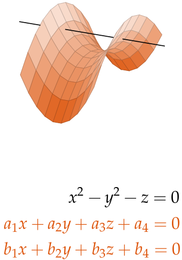

Picking up witness sets on our way to isolated solutions
Tianran Chen
Department of Mathematics and Computer Science
Auburn University at Montgomery
April 5, 2022
School of Mathematics Algebra Seminar
Georgia Institute of Technology
\[ F(x,y) = \left\{ \begin{aligned} 1 + 2 x y + 3 x y^2 + 4 x^4 y^3 \\ 5 + 3 x y + 2 x^2 y^2 + x^3 \\ \end{aligned} \right. \]
Polynomial systems with potentially negative integral exponents. E.g., \[ F(x,y) = \left\{ \begin{aligned} 1 + 2 x y + 3 x^{\color{red}{-1}} y^2 + 4 x^4 y^3 \\ 5 + 3 x y + 2 x^{\color{red}{-3}} y^2 + x^2 y^{\color{red}{-2}} \\ \end{aligned} \right. \]
We are interested in the zero set of $F$ in $(\mathbb{C}^*)^2$, i.e., \[ \mathcal{V}^*(F) := \{ (x,y) \in \mathbb{C}^2, x,y \ne 0 \mid F(x,y) = (0,0) \} \]
$\mathcal{V}^*(F)$ has the structure of a very affine variety.
It consists of components with well defined dimensions: \[ \mathcal{V}^* (F) = V_0 \cup V_1 \cup \cdots \cup V_n \] where each $V_d$ is pure $d$-dimensional.
Two classes of problems:
The problem of computing isolated $\mathbb{C}^*$-zeros of a Laurent polynomial system $F(x_1,\ldots,x_n)$.
Most homotopy methods works through a continuous deformation \[ H(\mathbf{x},t) = H(x_1,\dots,x_n,t) : \mathbb{C}^n \times [0,1] \to \mathbb{C}^n \] such that
The isolated solutions also move smoothly as $t$ goes from 1 to 0, forming smooth "solution paths" that lead us to the zeros of $F$.
We focus on the polyhedral homotopy of Huber and Sturmfels.
Huber & Sturmfels. (1995). A polyhedral method for solving sparse polynomial systems. Mathematics of Computation, 64 (212), 1541-1555.
To find the isolated zeros of \[ F(x_1,x_2) = \left\{ \begin{aligned} a_0 + a_1 x_1^1 x_2^2 + a_2 x_1^2 x_2^1 \\ b_0 + b_1 x_1^2 + b_2 x_2^2 + b_3 x_1^2 x_2^2 \end{aligned} \right. \] with generic coefficients $\{ a_i, b_i \}$, we consider the deformation \[ H(x_1,x_2,\color{red}{t}) = \left\{ \begin{aligned} a_0 \color{red}{e^{-\omega_1 M t}} + a_1 x_1^1 x_2^2 \color{red}{e^{-\omega_2 M t}} + a_2 x_1^2 x_2^1 \color{red}{e^{-\omega_3 M t}} \\ b_0 \color{red}{e^{-\omega_4 M t}} + b_1 x_1^2 \color{red}{e^{-\omega_5 M t}} + b_2 x_2^2 \color{red}{e^{-\omega_6 M t}} + b_3 x_1^2 x_2^2 \color{red}{e^{-\omega_7 M t}} \end{aligned} \right. \] for generic $\omega_1,\ldots,\omega_7 \in \mathbb{Q}^+$ and a sufficiently large $M > 0$. This formulation is given in Kim & Kojima (2004). Numerical Stability of Path Tracing in Polyhedral Homotopy Continuation Methods. Computing, 73 (4), 329-348. and Lee, Li, Tsai (2008). HOM4PS-2.0: A software package for solving polynomial systems by the polyhedral homotopy continuation method. Computing, 83(2-3), 109-133.
NAG is concerned with numerical computations of objects connected with algebraic sets defined over subfields of the complex numbers.
Hauenstein, J. and Sommese, A. (2017). What is numerical algebraic geometry? Journal of Symbolic Computation, 79, 499-507.
Here, "objects" = irreducible decompositions, and "subfield" = $\mathbb{C}$.
"Witness sets" are the standard data structure for representing algebraic sets in NAG.
They are generic linear slices of algebraic sets. (From classical studies of linear sections of algebraic sets) Beltrametti & Sommese. (1995). The adjunction theory of complex projective varieties (Vol. 16). Walter de Gruyter.
For a $d$-dimensional algebraic set, \[ \text{A witness set: } (W,F,L) \] where $W$ is the (0-dimensional) zero set of system $(F,L)$ and $L$ is a system of linear polynomials. Sommese & Verschelde. (2000). Numerical homotopies to compute generic points on positive dimensional algebraic sets. Journal of Complexity, 16(3), 572-602.
For example,
(This is just the real picture)
The added linear polynomials have generic complex coefficients. (More refined parametrization should use Grassmannian).
Witness sets contain enough information for computing other interesting objects/properties...
...and they are the basic building blocks for many higher level algorithms in NAG.
We are mainly interested in witness sets for algebraic sets with reduced components... ...in which case witness sets consists of nonsingular isolated zeros.
For (Laurent) polynomial systems \[ F(x_1,\ldots,x_n) = \mathbf{0} \] we have to different problems:
Polyhedral homotopy can find all 0-dimensional $\mathbb{C}^*$-zeros efficiently.
They are represented by "witness sets", a special type of sample set.
Can they be unified?
One approach: Use polyhedral homotopy to compute "tropism"
and asymptotic approximations of 1-dimensional components (curves).
Verschelde, J. (2009).
Polyhedral methods in numerical algebraic geometry.
Contemporary Mathematics, 496, 243.
Alternative: Polyhedral homotopy actually does both!
Consider \[ F(x_1,x_2) = \left\{ \begin{aligned} (x_1^2 + x_2^2 - 9)(x_1 + x_2 - 3) \\ (x_1^2 + x_2^2 - 9)(x_1 - x_2 - 1) \end{aligned} \right. \]
Or equivalently \[ F(x_1,x_2) = \left\{ \begin{aligned} x_1^3 + x_1^2 x_2 - 3x_1^2 + x_1 x_2^2 + x_2^3 - 3x_2^2 - 9x_1 - 9x_2 + 27 \\ x_1^3 - x_1^2 x_2 - 1x_1^2 + x_1 x_2^2 - x_2^3 - 1x_2^2 - 9x_1 + 9x_2 + 9. \end{aligned} \right. \]
Can we find $V_0$ and sample points for $V_1$? At the same time?
The standard polyhedral homotopy can already reach $V_0$ and $V_1$, for this example. In general, it is not known if polyhedral homotopy can always find smooth points in positive dimensional components.
\[ F(x_1,x_2) = \left\{ \begin{aligned} x_1^3 + x_1^2 x_2 - 3x_1^2 + x_1 x_2^2 + x_2^3 - 3x_2^2 - 9x_1 - 9x_2 + 27 \\ x_1^3 - x_1^2 x_2 - 1x_1^2 + x_1 x_2^2 - x_2^3 - 1x_2^2 - 9x_1 + 9x_2 + 9. \end{aligned} \right. \]
\[ \uparrow \] \[ H (x_1,x_2, t) = \left\{ \begin{aligned} ((1-t) 1 + t \color{purple}{c_{11}^*}) x_1^3 &+ ((1-t) \quad 1\;\; + t \color{purple}{c_{12}^*}) x_1^2 x_2 + \cdots \\ ((1-t) 1 + t \color{purple}{c_{21}^*}) x_1^3 &+ ((1-t) (-1) + t \color{purple}{c_{22}^*}) x_1^2 x_2 + \cdots \end{aligned} \right. \]
\[ \uparrow \] \[ H_0 (x_1,x_2, t) = \left\{ \begin{aligned} \color{purple}{c_{11}^*} x_1^3 \color{red}{e^{-\omega_{11} M t}} + \color{purple}{c_{12}^*} x_1^2 x_2 \color{red}{e^{-\omega_{12} M t}} + \cdots \\ \color{purple}{c_{11}^*} x_1^3 \color{red}{e^{-\omega_{21} M t}} + \color{purple}{c_{12}^*} x_1^2 x_2 \color{red}{e^{-\omega_{22} M t}} + \cdots \end{aligned} \right. \]
\[ \uparrow \] Binomial systems
All isolated $\mathbb{C}^*$-zeros can be reached.
Can be expressed as a single homotopy
\[
H (x_1,x_2, \, \color{red}{t_0} \,,\, \color{purple}{t_1} ) =
\left\{
\begin{aligned}
\color{purple}{((1-t_1) 1 + t_q c_{11}^*)}\, x_1^3\, \color{red}{e^{-\omega_{11} M t_0}} + \cdots \\
\color{purple}{((1-t_1) 1 + t_q c_{21}^*)}\, x_1^3\, \color{red}{e^{-\omega_{21} M t_0}} + \cdots
\end{aligned}
\right.
\]
With one small modification, we can discover sample sets for all positive-dimensional components.
\[ H ( x_1,x_2, \color{red}{t_0}, \color{purple}{t_1}, \color{blue}{t_2} ) = \left\{ \begin{aligned} (1 + \color{blue}{t_2 b_{11}^*} + \color{purple}{t_1 a_{11}^*})\, x_1^3\, \color{red}{e^{-\omega_{11} M t_0}} + \cdots \\ (1 + \color{blue}{t_2 b_{21}^*} + \color{purple}{t_1 a_{21}^*})\, x_1^3\, \color{red}{e^{-\omega_{21} M t_0}} + \cdots \end{aligned} \right. \]
$H = 0$ defines a finite number piecewise smooth curves over the $t$-path
$ ( \color{red}{ t_0}, \color{purple}{t_1}, \color{blue}{ t_2} ) : ( \color{red}{ 1}, \color{purple}{1}, \color{blue}{ 1} ) $
Starting system at toric $\infty$
$\to$
$ ( \color{red}{ 0}, \color{purple}{1}, \color{blue}{ 1} ) $
$F$ with generic coeff.
$\to$
$ ( \color{red}{ 0}, \color{purple}{0}, \color{blue}{ 1} ) $
"Less" generic coeff.
Contains samples for $V_1$
$\to$
$ ( \color{red}{ 0}, \color{purple}{0}, \color{blue}{ 0} ) $
$F$ with Original coeff.
Contains isolated zeros
We can compute sample points for the 1-dimensional component as by-products of the process of computing (nonsingular) isolated zeros.
A Laurent polynomial system $F = (f_1,\ldots,f_n)$ is unmixed if $f_1,\ldots,f_n$ have the same support. (They have the same set of monomials)
Can be written as \[ F(\mathbf{x}) = C (\mathbf{x}^A)^\top \] where $C$ is the coefficient matrix and $A$ is the support matrix
\[ F(x_1,x_2) = \left\{ \begin{aligned} x_1^3 + x_1^2 x_2 - 3x_1^2 + x_1 x_2^2 + x_2^3 - 3x_2^2 - 9x_1 - 9x_2 + 27 \\ x_1^3 - x_1^2 x_2 - 1x_1^2 + x_1 x_2^2 - x_2^3 - 1x_2^2 - 9x_1 + 9x_2 + 9. \end{aligned} \right. \]
\[ F(x_1,x_2) = \begin{bmatrix} 1 & 1 & -3 & 1 & 1 & -3 & -9 & -9 & 27 \\ 1 & -1 & -1 & 1 & -1 & -1 & -9 & 9 & 9 \\ \end{bmatrix} \begin{bmatrix} x_1^3 \\ x_1^2 x_2 \\ x_1^2 \\ x_1 x_2^2 \\ x_2^3 \\ x_2^2 \\ x_1 \\ x_2 \\ 1 \end{bmatrix} \]
For a unmixed system \[ F(\mathbf{x}) = C \, (\mathbf{x}^A)^\top \] we define \[ H(\mathbf{x},t_0,t_1,\ldots,t_n) = (C + \Lambda \operatorname{diag}(t_1,\ldots,t_n) C^*) \, (\mathbf{x}^A \circ e^{-M t_0 \boldsymbol{\omega}} )^\top \] where $\Lambda$ and $C^*$ are generic complex matrices, $\boldsymbol{\omega}$ is a generic (row) rational vector, and $M > 0$ is sufficiently large.
The starting solutions are those used in polyhedral homotopy,
And we track the solution paths over a parameter path passing through
A sample set for a reduced positive-dimensional (non-isolated) reduced component of $\mathcal{V}^*(F)$ is a subset that is
A rank $r$ sample set of $\mathcal{V}^*(F)$ is a subset that is
\[
\text{Sample set} \;\approx\;
\text{Witness set}
\]
...except the number of points is no longer
connected to the degree of the components
(in projective sense).
To sample all reduced irreducible components of $\mathcal{V}^*(F)$, we use
\[ F(\mathbf{x}) = C \, (\mathbf{x}^A)^\top \quad \longrightarrow \quad H(\mathbf{x},\color{blue}{s},\color{red}{t}) := C(\color{blue}{s}) \, (\mathbf{x}^A \circ e^{-\color{red}{t} M \boldsymbol{\omega}} )^\top \]
There is a stratification of the coefficient space: Locally closed manifolds of coefficient choices $S_0, S_1, \ldots, S_n$ such that \[ \text{Gr}(q,m) \;\supset\; \overline{S_n} \;\supset\; \overline{S_{n-1}} \;\supset\; \cdots \;\supset\; \overline{S_1} \;\supset\; \overline{S_0} \]
\[ F(\mathbf{x}) = C \, (\mathbf{x}^A)^\top \quad \longrightarrow \quad H(\mathbf{x},\color{blue}{s},\color{red}{t}) := C(\color{blue}{s}) \, (\mathbf{x}^A \circ e^{-\color{red}{t} M \boldsymbol{\omega}} )^\top \]
Focusing on the stage $\color{blue}{s}$ going from 1 to 0.
Goal: follow a path $C(\color{blue}{s})$ (in the coefficient space) of deformation that will pass through each stratum in the stratification \[ \overline{S_n} \;\supset\; \overline{S_{n-1}} \;\supset\; \cdots \;\supset\; \overline{S_1} \;\supset\; \overline{S_0} \]
We track the solution paths $\{\,(\mathbf{x}(s),s)\,\}$ defined by $H = \mathbf{0}$.